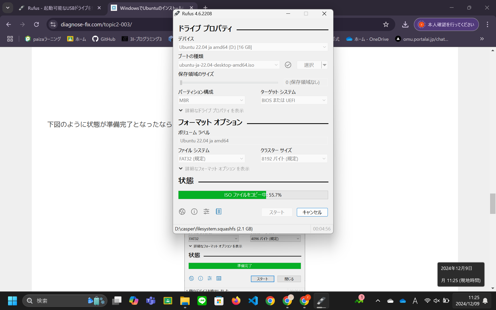

OSのダウンロード
UbuntuのインストールUSBメディアを作成する
Ubuntu Japanese Teamにアクセスし、インストールイメージをダウンロードします。このとき、日本語Remixのイメージの方が日本語化が多くされているのでRemixのイメージがおすすめです。
次にダウンロードしたイメージをUSBにコピーしてインストールUSBメディアにするためにrufusを使います。rufusとは、起動可能なUSBドライブを簡単に作成するサービスです。UbuntsuのほかにもLinux系のOSなどのインストールイメージにも対応しています。
 一番上の
一番上のrufus-4.6.exeを選びダウンロードできたらexeファイルを実行します。
注意
ユーザーアカウント制御のダイアログが表示された場合は、「OK」をクリックしてください。また初回のみ、Rufusの更新ポリシーに関するダイアログが表示されるので確認してください。 起動したらまずUSBメディアをUSBポートにつなぎ、選択から先ほどダウンロードしたインストールイメージを選択し、スタートを押すとダウンロードが始まります。 注意
途中でダウンロードを求めてくるダイヤログが表示されたときは、「はい」をクリックしてください。 続いて、ハイブリッドISOイメージの検出のダイアログが表示されるので推奨のまま「OK」を押してください。 最後に警告のダイアログが表示されますので、作成するUSBメディアが正しいかを確認して、再度OKを押すと、ファイルのコピーが始まります。 状態が準備完了になったら閉じるを押してください。作成したインストールUSBメディアからUbuntsuを起動する
USBメディアを指した状態でASUSを起動すると、選択画面が表示されるので一番上の*Try or Install Ubuntsuを選択しEnterキーでを押すとようこそと書かれた画面に移動します。そこで「Ubuntsuをインストール」を選択して、キーボードのレイアウトは日本語（Japanese）を選択します。無線は現状使わないので設定しなくても大丈夫です。そのまま進めていくと、アップデートとほかのソフトウェアというページに行きます。そこでは初期設定の通常のインストールを選択し、そのまま次に進みます。インストールの種類は、過去のデータが残っている場合は、一から作成したいので、ディスクを削除してUbuntsuをインストールを選択します。そのあとも初期設定どおり続けていきユーザーIDなども登録すると、インストールが始まります。インストールが終わると再起動を行うように指示が出るので、適宜行ってください。以上でUbuntsuのインストール作業は終了です。